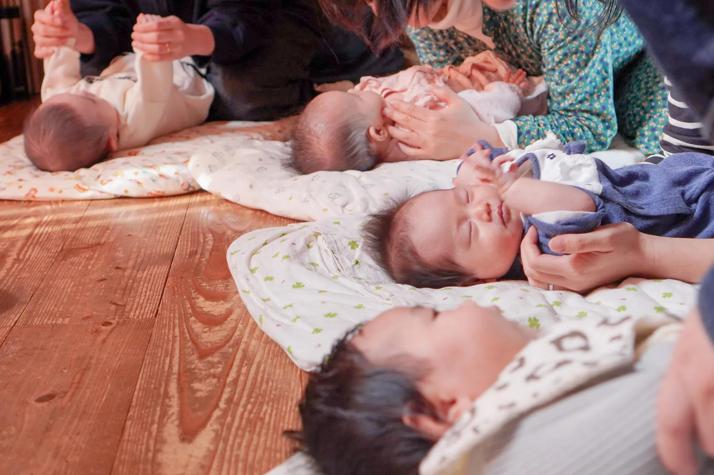
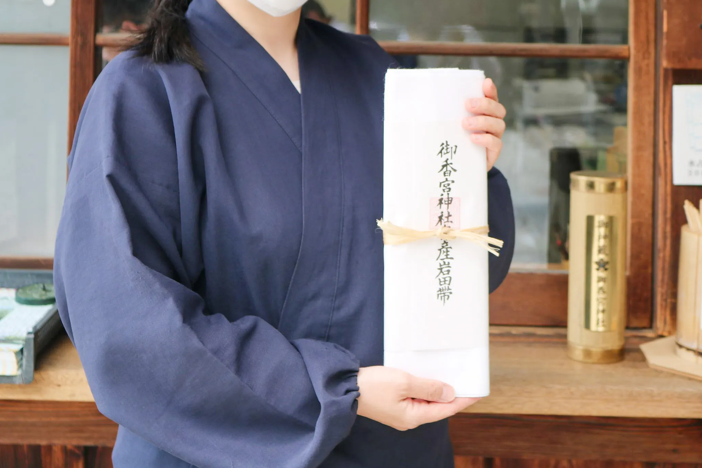
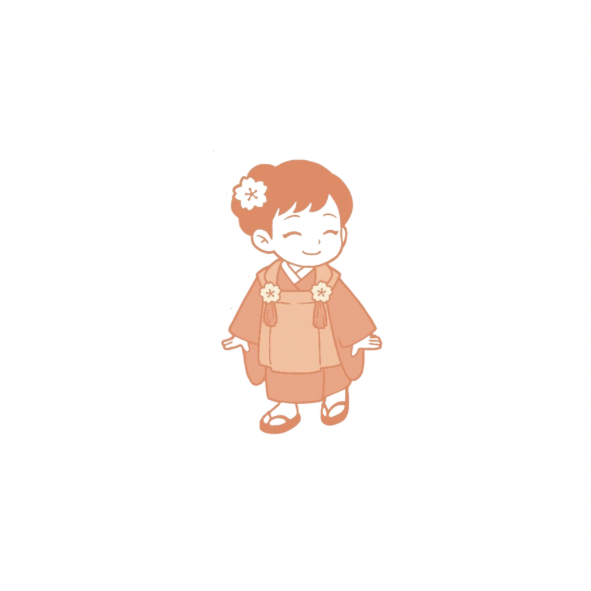
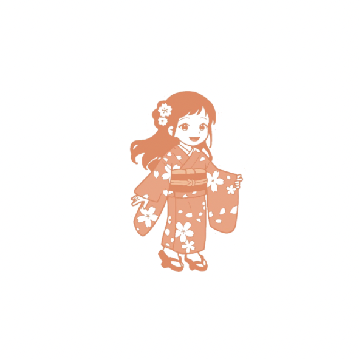

歴史ある社で～日本の未来を紡ぐ
新たな”命の輪”を育てる～活動として
『御香宮 -赤ちゃんまつり-』を立ち上げました。
『赤ちゃんまつり』の立ち上げの経緯
出生率についての課題が取り上げられますが、
今の日本は新たな”命”を宿し、未来に向けて安心し
子育てが行うことができる社会なのでしょうか。
今、我々に何ができるのか、何をするべきか…
そこで、今まで培ってきた力で様々な専門家と連携し
『赤ちゃんまつり』のプロジェクトを
立ち上げることに致しました。
『御香宮-赤ちゃんまつり』とは
安産祈願の聖地から始まる新たな命の物語
神社という神聖な場で命の始まりをあらためて深く考え、学び、感じ、
女性をはじめ子供たち、家族の一生を通じた健康を支え、
誰もが不安なく豊かに自分らしく生きられる社会づくりを応援するプロジェクトです。
『安産の神様』として崇敬されている御香宮神社
-
「安産の神様」由来
主祭神の神功皇后は、第14代仲哀天皇の皇后で第15代応神天皇の母にあたります。神功皇后は、懐妊の身でありながら朝鮮半島へ出陣され、新羅・百済・高句麗を平定されたといわれています。
無事帰還された後に、御子である応神天皇を出産され、子育てに励まれたことから、安産・子育ての神として篤く崇敬を受けています。このような御神徳により、御香宮神社では戌の日の安産の参拝者が多く訪れられます。
-
御香水
御香宮神社の名の由来となった清泉で「石井の御香水」として、伏見の七名水のひとつに数えられている。平安時代の貞観4年（862）9月9日、境内より水が湧き出し、良い香りが四方に漂い、この水を飲むと病気がたちまち癒えたという奇瑞により、清和天皇から「御香宮」の名を賜った。
「名水百選」
この水は霊水として信仰され、病気平癒にご利益があると言われ多くの方に好まれている。更に多数の茶道、書道の関係者にも利用されている。
『赤ちゃんまつり』を通じて行うこと


私たちが取り組む3つの使命
-
少子化‧母子数の減少という日本社会の課題に対し、命の尊さを伝え、出産‧子育てに関する支援活動に努めます。
命の尊さと支援
-
妊娠‧出産期における正しい知識やケア方法の普及に努め、不安や悩みを解消するサポートに尽力いたします。
正しい知識の普及
-
心と身体の両面から妊婦さんを支える活動の場を提供し、安心して出産を迎えれる環境づくりに尽力いたします。
心と身体の両面支援
『御香宮 - 赤ちゃんまつり』は単なるイベントではなく、
「生まれてきてくれて、ありがとう」その言葉を、地域社会に残す場所をつくります。
『助産師インストラクター』の役割
心と身体の両面からサポート
- 腹帯講座、安産を目指す身体の使い方などのサポート
妊婦さんに向けた安産を目指すための適切な腹帯の巻き方、体幹トレーニングなどのレクチャーをし出産に備えた身体づくりをサポートします。
- ライフスタイルアドバイス
妊娠中の食事‧運動‧姿勢など、日常生活での注意点や健康維持のための知識や産後のライフスタイルのご提案もさせていただきます。
- 悩み相談・セルフケア支援
妊娠‧出産‧子育てに関する不安や疑問に寄り添い、セルフケアの方法を伝授することで、心理的な負担にアプローチします。
助産師インストラクター
専門知識を持つ助産師が妊婦さんの心と身体を支えます
『赤ちゃんまつり』で体験できること
-
安産特別祈願祭
神職による特別な祈願祭
安産のお守りと御札の授与

-
産前産後ケア
安心安全な出産のための身体づくり
出産時に役立つ呼吸法と身体の動き

-
妊娠出産育児セミナー
パートナーと一緒に学べる内容
赤ちゃん整体教室等
 -
腹帯教室・母乳相談
助産師による腹帯のお話と巻き方
助産師による母乳相談
 -
下駄トレーニング
骨盤を整え産前産後をサポート
インストラクターによる充実のレクチャー

-
エコロジーウォーキング
出産直前でも楽しめるウェルネス活動
下駄×ゴミ拾いで心身のリフレッシュ

全てのプログラムは、助産師.専門家による安心‧安全に配慮し、
専門家の監修のもと施されます。
妊婦さんの体調や状況に合わせて参加いただけます。
安産・子育ての社から紡ぐ命の輪

プロジェクト第一弾赤ちゃん回廊を建立
神社の｟参道｠と赤ちゃんが生まれる｟産道｠は同じ“さんどう”。
“鳥居のところからお社まで”行く道は《参道》です。
《参道》を通ってお参りして、又《参道》を取って帰って行きます。ということは、『神様』にお参りするという事はもう一度お腹に入るという事です。
赤ちゃんがお母さんのお腹から生まれる時、通ってくるのも《産道》と言います。帝王切開などで産道を通れなかった子にも赤ちゃん回廊で《産道》を通る体験をしてもらいます。
｟参道＝産道｠お宮参りというのは、とても『理』のあること。お母さんの元に帰る事です。
このように日本人が大事にしてきた二つの「道」を重ね合わせ、その意味を「回廊という」形で現代に蘇らせたいと考えております。
懐妊祈願・安産祈願・お宮参り・子供の成長を支える七五三回廊など日本初の回廊を建立します。

赤ちゃん回廊「生まれてきてくれて、 ありがとう」を100年先まで残す場所。
・赤ちゃん回廊とは
「赤ちゃん回廊」は、神社の参道と、命が生まれる産道を重ねあわせた場所です。
神社の参道は古来より神域へと向かう特別な道。「参道＝産道」この概念から生まれたのが、私たちの象徴的な取り組みです。日本人が大切にしてきた二つの「道」を重ね合わせ、その意味を「回廊というかたち」で現代に蘇らせたいと考えております。
-

【お母さん】― 命を迎えるための祈りの道 ―
お腹の中に新しい命を宿した妊婦さんが「無事に赤ちゃんを迎えられるように」と願いながら通っていただきます。
母体と赤ちゃんの健康、安全な出産を祈るこの道は、「産道」を象徴し、神様とのご縁を深め、家族としての第一歩を踏み出す祈りの場所です。 -

【赤ちゃん】― この世に生を受けた命のはじまりを祝う道 ―
生まれたばかりの赤ちゃんが、生まれ変わりの意味を持つ神聖な「参道」を自らの足で通る体験をすることで、この世界に迎えられたことを祝福する回廊です。
帝王切開などで「産道」を通れなかった赤ちゃんにも、神様のもとからこの世へと降りてきた象徴的な体験として「再びの通り道」として捧げられます。 -

【三歳】― 言葉と感情の芽生えを祝う道 ―
「言葉を話し、感情を表現しはじめる」大切な成長の節目。
三歳は、子どもの個性と心が芽吹く時期に、神様とつながり、健やかな感性と優しい心を育むよう祈る道です。七五三でも知られる「髪置きの儀」の意味も込め、これからの成長を見守ります。 -

【五歳】― 自我と力を育てる成長の道 ―
身体がしっかりし、社会性が育ちはじめる五歳は、責任や協調を学ぶ大切な時期です。五歳は、神様に見守られながら、自らの力で一歩を踏み出す勇気を持ち、周囲との絆を学びながら健やかに育つことを祈願します。「袴着（はかまぎ）の儀」に通じる、成長と独立の第一歩です。
-

【七歳】― 社会へ羽ばたく準備を整える通り道 ―
「言葉と心」「礼儀と知恵」を身につける重要な節目。七歳は、神様にこれまでの成長を感謝し、これから社会へ向けて歩み出す準備を整える道です。
「帯解きの儀」にちなみ、幼児期を卒業し、自立への第一歩を踏み出す通過儀礼でもあります。
『赤ちゃん回廊』『ぷち回廊』想定身長と設計高さ

『赤ちゃんまつり』への想い
命の尊さを学び、誰もが豊かに過ごせる社会創りを目指し、女性の悩みや不安に寄り添い次世代の生きる力を支え続ける。
御香宮 -赤ちゃんまつり実行委員会